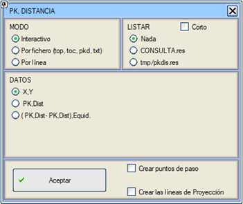
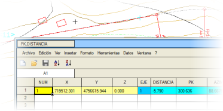
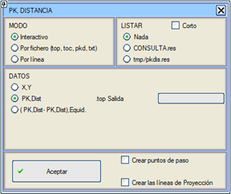
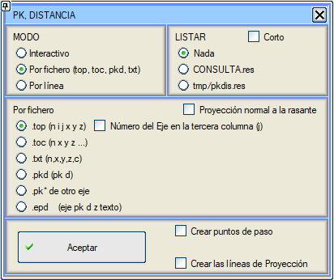
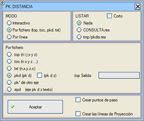
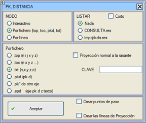
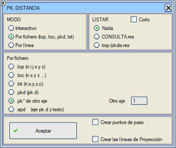
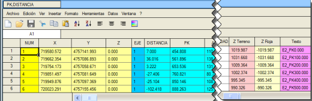
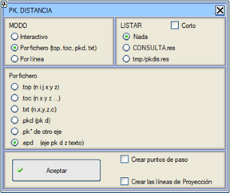
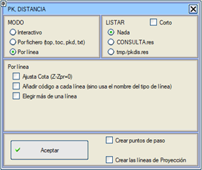

Bu araç, hem PLAN hem de BOYKESİT menülerinden çağrılabilir ve kullanıcının tanımladığı bir dizi noktanın bir eksen üzerindeki KM'sini ve o eksene olan mesafesini öğrenmeyi sağlar. Bu, binaların, kazıkların, aydınlatma direklerinin veya diğer herhangi bir elemanın eksenlere göre konumlarını elde etmek için çok kullanışlıdır.

 KM-Mesafe kullanımıyla aşağıdaki bilgiler elde edilir:
- Noktanın X,Y,Z koordinatları.
- Eksen numarası, eksene dik mesafe (ofset) ve eksen üzerindeki izdüşüm KM'si.
-
Köşeler Arası 3D Mesafe (d.3D Köşeler), seçilen çizgilerin köşeleri arasında veya interaktif ya da dosyadan mod için noktalar arasındaki gerçek mesafeleri gösterir.
- Eksen üzerindeki izdüşüm noktasındaki azimut, yarıçap ve koordinatlar.
- Eksenin kırmızı kotu (Zkırmızı kot).
- Eksenden devere göre yansıtılan kot (Zyansıtılan).
- Platform kenarı kotu (ZPlat.Kenarı):
Karayollarında geometrik eksenin (kod 1 noktası) ve otoyollarda platformun iç şerit kenarının (yine kod 1) kotu. Bu değer, dönme ekseninde kaymalar olduğunda bir öncekinden farklı olacaktır.
- Noktanın bulunduğu eksen tarafındaki dever.
- Seçilen noktanın, eksenden devere göre yansıtılan kota (Z-Zyansıtılan) ve kırmızı kota (Z-Zkırmızı kot) göre kot farkları.
- Eğer seçilen nokta platformun (yüzey 67) içindeyse platformdaki kot. Dışındaysa sıfır verir.
- Noktanın yansıtıldığı KM'deki eksende arazi kotu (Z Arazi Eksen).
Eğer bu menüye PLAN'dan erişilirse, enkesit veya kırmızı kot verileri mevcut olmadığından, bu veriler listelerde görünmez (deverler, kotlar,...).

|
Demiryolları durumunda, platform kenarı kotu ve yansıtılan kot yerine, kırmızı kot ve bununla olan kot farkı listelenir. Ayrıca, deverler milimetre olarak listelenir. |
LİSTELE bölümünde kullanıcı şunları seçebilir:
- Hiçbir şey listeleme: Bu şekilde sadece ekranda bilgi içeren bir veri tablosu görünür.
- İstenen tüm bilgileri içeren SORGULAMA.res listesini al.
- Mevcut çalışma klasörünün içindeki tmp klasöründe oluşturulacak ve bir hesap tablosuyla işlenebilecek pkdis.res adlı sekmeyle ayrılmış bir dosya al.
Eğer Kısa kutucuğu işaretlenirse veya iletişim kutusuna bu modda girilmişse, listeler bilgiyi daha özetlenmiş bir şekilde gösterir ve sadece aşağıdaki verileri sunar:
- Noktanın X,Y,Z koordinatları.
- Eksen numarası.
- Eksene dik mesafe.
- Eksen üzerindeki izdüşüm KM'si.
- Eksenin kırmızı kotu (Zkırmızı kot)
- Noktanın bulunduğu eksen tarafındaki dever.
Eğer Geçiş noktaları oluştur kutucuğu işaretlenirse, program, hesaplanan noktalardan yola çıkarak ilgili eksenlerin geçiş noktalarını da oluşturur.
Eğer İzdüşüm çizgileri oluştur kutucuğu işaretlenirse, her noktanın eksene dik izdüşüm çizgileri haritaya çizilir (mevcut çizgi tipiyle oluşturulur).
|
Mevcut eksen için KM,Mesafe hesaplanırken ve verileri değiştirilirken, .vol dosyasını önceden kaydetmek gerekir, çünkü fonksiyon bu dosyada bulunan veriler üzerinde çalışır ve yüklü veriler üzerinde değil, çünkü mevcut eksen olmasa bile projenin herhangi bir ekseni için kullanılabilir.
Eğer nokta eksen sınırlarının veya (sağ tıklayarak ekseni seçerken seçilen) KM aralığının dışına yansıtılırsa, nokta çıktı listesine dahil EDİLMEZ.
|
İnteraktif Mod
Grafiksel veya klavye ile veri girilmesi döngüsel olarak istenir. Fonksiyon, <Esc> tuşuna basılana kadar aktif kalır.

VERİLER bölümünde, noktanın veri giriş modunu seçme imkanı verilir, bunlar şunlar olabilir:
- KM,Mesafe şeklinde: Bu durumda, noktaların koordinatlarıyla bir .top dosyası da oluşturulabilir, bu da bir eksene göre KM,Mesafe ile noktalar tanımlamayı ve daha sonra koordinatlarından yola çıkarak farklı bir eksene göre aplikasyonunu yapmayı sağlar. Bu dosyada, her noktanın kotu yansıtılan kot olacaktır (kırmızı kot + Mesafe × Dever).
- BaşlangıçKM,Mesafe'den BitişKM,Mesafe'ye kadar bir kesim ve bir eşit aralığa göre tanımlama.
Dosyadan Modu
Bu durumda, VERİLERİN girişi bir nokta dosyası aracılığıyla yapılır ve aşağıdaki olasılıklar mevcuttur:
- Topografik dosyalar (.top/.toc):
Nokta bulutundaki her noktanın koordinatları okunur ve her biri için sonuçlar gösterilir. [ ] Üçüncü sütunda eksen numarası seçeneği işaretlenerek, her bir noktanın yansıtılacağı eksen numarası, .top dosyasının üçüncü sütunundan okunur. (n i2 i3 x y z metin: eksen = i3)
- KM-mesafe dosyaları (.pkd):
Program X,Y koordinatlarını hesaplar. KM-Mesafe'ye göre interaktif mod gibi, noktaların koordinatlarıyla bir .top dosyası elde etmek de mümkündür.
Ayrıca üç sütunlu (KM, mesafe ve kot) .pkd dosyaları da sağlanabilir. Bu durumda ve bir .top dosyası oluşturulursa, yazılan kot yansıtılan kot yerine .pkd dosyasının kotudur.
- .txt dosyaları,
içeriği: Numara, X, Y, Z ve KOD, virgülle ayrılmış. Bu durumda listelenecek kod sorulur ve sadece o koda sahip veya girilen kodla aynı harflerle başlayan noktalarla hesaplama yapılır.
Eğer veriler bir topografik dosyadan veya .txt'den geliyorsa, noktanın numarası da listelenir. Eğer noktalar ekranda tıklanırsa, bunlar ardışık olarak numaralandırılır.
- Başka bir yardımcı eksen üzerindeki KM dosyasıyla (.pk).
Program, yardımcı eksendeki noktaların koordinatlarını hesaplar ve ardından seçilen eksen üzerindeki km,mesafe verilerini hesaplar.
Metin sütununda, yardımcı eksenin numarası ve orijinal KM saklanır, örn. E7_KM125.000
Örnek: İki eksen 1 ve 2 ve eksen 2'nin KM verilerini içeren bir .pk dosyası.
Eksen 1 üzerindeki mesafeleri ve izdüşüm KM'lerini elde etmek istiyoruz.
Diğer eksen kutusunda eksen 2'yi seçin ve programın KM dosyasını (.pk) istemesi için Kabul Et'e basın.
Program, ekseni seçmenizi veya numarasını yazmanızı isteyecek ve 1 numaralı ekseni seçeceğim.
.pk dosyasında seçilen KM'lerle birlikte bir Metin sütunu görünecektir.

- .epd dosyaları,
içeriği: eksen, KM, mesafe
a, kot, metin.
Çizgiden Modu
Köşeleri hesaplama noktaları olacak bir poligon hat ister.
Kot ayarla (Z-Zpr=0) seçeneği, bir çizginin kotunu eksenin yansıtılan kotuna göre ayarlamayı sağlar.
Her çizgiye bir kod ekle (çizgi tipi adını kullanmıyorsa) seçeneği, çizginin noktalarını tanımlamak için klavyeden bir kod (alfanümerik metin) eklemeyi sağlar. Bu seçenek etkinleştirilmezse, seçilen çizgi tipinin adı kod olarak alınır.
Birden fazla çizgi seç seçeneği, birden fazla çizgi seçmeyi sağlar (eksen ilk çizgiden sonra seçilir). Daha fazla çizgi seçmek istenmediğinde, boş bir yere tıklanabilir veya [esc] tuşuna basılabilir.
Geçerli bir CRS ilişkilendirilmişse, tüm modlar için noktanın coğrafi koordinatları mevcut CRS'de ve WGS84'te veri tablosuna eklenir.
|